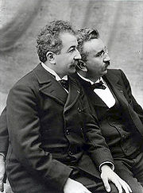

Справка
Кинемато́граф (от греч. κινημα, род. п. κινηματος — движение и греч. γραφω — писать, изображать) — отрасль человеческой деятельности, заключающаяся в создании движущихся изображений. Иногда также упоминается как синемато́граф (от фр. cinématographe, устар.) и кинематогра́фия. Кинематограф был изобретён в XIX веке и стал крайне популярен в XX веке. В понятие кинематографа входят киноиску́сство — вид современного изобразительного искусства, произведения которого создаются при помощи движущихся изображений, и киноиндустрия (кинопромышленность) — отрасль экономики, производящая кинофильмы, спецэффекты для кинофильмов, мультипликацию, и демонстрирующая эти произведения для зрителей. Произведения киноискусства создаются при помощи кинотехники. Изучением кинематографа занимается наука кинове́дение.
Влияние кинематографа на культуру и искусство бесспорно, высказываются даже предположения о значимости влияния кинематографа на политику и экономику. Во многих странах киноиндустрия является значимой отраслью экономики. Производство кинофильмов сосредоточено на киностудиях. Фильмы демонстрируются в кинотеатрах, по телевидению, распространяются «на видео» в форме видеокассет и видеодисков.
1. История кинематографа
1.1 Рождение кинематографа
Исторически кинематограф появился в результате решения задачи по закреплению на материальном носителе изображения непрерывного движения объектов и проекции этого движения на экран. Для решения этой задачи необходимо было создание сразу нескольких технических изобретений: гибкой светочувствительной плёнки, аппарата хронофотографической съёмки, проектора быстро сменяющихся изображений. Первая гибкая светочувствительная негорючая плёнка была изобретена русским фотографом И. В. Болдыревым (1878—1881), затем американскими изобретателями Г. Гудвином в 1887 и Дж.Истменом в 1889 была создана горючая, целлулоидная пленка. Первые же аппараты хронофотографической съемки были сконструированы в 80-х годах XIX века. К ним относятся: «фоторужьё» французского физиолога Э. Марея (1882), аппарат французского изобретателя О. ле Пернса (1888), аппарат английских изобретателей У. Фризе-Грина и М. Эванса (1889), аппарат русского фотографа В.А. Дюбюка (1891), «Фоноскоп» французского физиолога Ж. Демени (1892). Пионерами в создании аппаратов для проекции на экран быстро сменяющихся изображений были: немецкий и русский фотографы О. Анщюц и В.А. Дебюк, создавшие соответственно в 1891 и 1892 годах проекционные аппараты различной конструкции, но с одинаковым названием — «Тахископ», французский изобретатель Э. Рейно, создавший в 1892 году проектор под названием «Оптический театр», и русские изобретатели И.А. Тимченко и М.Ф. Фрейденберг (1893).
|
 |
Изобретениями наиболее приблизившиеся к кинематографу по своим техническим характеристикам являются: «кинетоскоп» Эдисона, аппарат И.А. Тимченко (1893), «хронофотограф» Ж. Демени (1893), проектор американского изобретателя Ж.А. Ле Роя (1894), проектор «паноптиком» американского изобретателя У. Латама (1895), «плеограф» польского изобретателя К. Прушинского (1894) и др. А уже в 1895-1896 годах были изобретены аппараты, сочетающие в себе все основные элементы кинематографа: во Франции - «синематограф» братьев Л. и О. Люмьер (1895) и «хронофотограф» Ж. Демени (1895); в Германии – «биоскоп» М. Складановского (1895) и кинопроектор О. Местера (1896); в Англии – «аниматограф» Р.У. Пола (1896); в России – «хронофотограф» А. Самарского (1896) и «стробограф» И. Акимова (1896), в США – «витаскоп» Т. Армата (1896).
Начало распространения кинематографа было положено съёмкой и публичной демонстрацией первых короткометражных фильмов. 1 ноября 1895 года в Берлине М. Складановский продемонстрировал свой «биоскоп», а 28 декабря 1895 года в Париже братьями Люмьер был продемонстрирован их «синематограф». В течении 1896-1897 годов публичные демонстрации короткометражных фильмов были произведены во всех мировых столицах. В России первые показы были организованы в апреле 1896 года в Москве и Санкт-Петербурге, а затем на Всероссийской ярмарке в Нижнем Новгороде. Тогда же были сняты первые отечественные любительские киносъемки (В. Сашин, А. Федецкий, С. Макаров и др.).
1.2 Эпоха немого кино
|
|

Первые короткометражные фильмы (15—20 метров, примерно 1,5 минуты демонстрации) были по большей части документальные, однако уже в комедийной инсценировке братьев Люмьер «Политый поливальщик» отражаются тенденции зарождения игрового кино. Небольшая длина первых фильмов была обусловлена техническим несовершенством киноаппаратуры, тем не менее, уже к 1900-м годам длина кинокартин увеличилась до 200—300 метров (15—20 минут демонстрации). Совершенствование съёмочной и проекционной техники способствовало дальнейшему увеличению длины фильмов, качественному и количественному увеличению художественных приёмов съёмки, актёрской игры и режиссуры. А широкое распространение кинематографа и популярность кинематографа обеспечили его экономическую выгодность, что, однако, не могло не сказаться на художественной ценности снимаемых кинокартин. В этот период с усложнением и удлинением сюжета фильмов начинают формироваться жанры кинематографа, оформляется их художественное своеобразие, создается специфический для каждого жанра набор изобразительных приёмов. Наивысшего своего расцвета «немое» кино достигает к 20-м годом, когда оно уже вполне оформляется как самостоятельный род искусства обладающий своими собственными художественными средствами.
1.3 Приход звука
Ещё до начала XX века Томас Эдисон пытался синхронизировать кинескоп c фонографом, но потерпел неудачу. Однако в последствии Уильям Диксон соавтор Эдисона утверждал, что ему уже в 1889 году удалось создать кинетофонограф — прибор, воспроизводивший звук и изображение одновременно. Однако не существует никаких доказательств, подтверждающих его слова.
В ранний период кинематографа, звуковое кино пытались создать во множестве стран, но столкнулись с двумя основными проблемами: трудность в синхронизации изображения и звука и недостаточная громкость последнего. Первая проблема была решена путём записи и звука, и изображения на одном и том же носителе, но для решения второй проблемы требовалось изобретение усилителя низкой частоты, что произошло лишь в 1912 году, когда киноязык развился настолько, что отсутствие звука уже не воспринималось как серьёзный недостаток.
В результате патент на ту систему звукового кинематографа, которая впоследствии совершила звуковую революцию, был получен в 1919 году, но кинокомпании не обратили никакого внимания на возможность кино заговорить, желая избежать удорожания стоимости производства и проката кинофильмов и потери иноязычных рынков. Пока в 1925 году компания Warner Brothers, находившаяся на грани банкротства, не вложилась в рискованный звуковой проект.
Уже в 1926 году Warner Brothers выпустила несколько звуковых фильмов, состоящих в основном из музыкальных номеров, но особого успеха у зрителей они не имели. Успех пришёл только с фильмом "Певец джаза", в котором кроме музыкальных номеров Эла Джолсона присутствовали и его короткие реплики. 6 октября 1927 года — день премьеры "Певца Джаза" — принято считать днём рождения звукового кино.
1.4 Дальнейший технический прогресс в кино
Хотя первый примитивный цветной фильм (с красно-зелёной гаммой, без синего цвета) вышел ещё в 1922 году, он не впечатлил зрителей. Первый «полноценно цветной» короткометражный фильм системы «Technicolor» под названием «La Cucaracha» вышел в 1934 году. Первый же полнометражный цветной фильм «Бекки Шарп» американского режиссёра армянского происхождения Рубена Мамуляна вышел в 1935, этот год и принято считать годом появления цветного кино. В СССР первый игровой цветной фильм «Груня Корнакова» был снят уже в 1936 году.
В 1950-х годах технический прогресс зашёл ещё дальше. Разработка и внедрение магнитной записи и воспроизведения звука, а также создание и освоение новых видов кинематографа (панорамного, стереоскопического, полиэкранного и др.) привели к значительному повышению качества показа фильмов, стали говорить об «эффекте присутствия» зрителя. Впечатление усиливалось стереофоническим воспроизведением звука, позволявшем создавать «пространственную звуковую перспективу» — звук как бы следует за изображением его источника, вызывая иллюзию реальности источника звука.
В настоящее же время существуют очень изощрённые системы звукового сопровождения кино. Число отдельных звуковых каналов доходит до 7, а в экзотических системах даже до 12. Разумеется, всё это призвано усилить глубину погружения зрителя в атмосферу просматриваемого фильма.
2 Технические особенности кинематографа
2.1 Соотношение сторон экрана
Соотношение ширины и высоты кадра (англ. aspect ratio) — важнейшее понятие в кинематографе. В течение большей части истории кинематографа отношение горизонтальной к вертикальной стороне кадра примерно 4:3 (4 единицы в ширину к 3 единицам в высоту; иногда ещё записывается как 1,33:1 или просто 1,33) — сложившееся ещё во времена Эдисона и Люмьеров в силу достаточно случайных причин, хотя и близкое к самому распространенному формату полотна в живописи. Это же отношение было перенято и телевидением. Дело в том, что поле зрения человека имеет соотношение отнюдь не 4:3. Ведь у человека 2 глаза, расположенных на одной горизонтальной линии — следовательно, поле зрения человека шире и приближается к соотношению 2:1. Поэтому, при возникновении сильной конкуренции со стороны телевидения кино стало активно обращаться к широкому экрану, в котором постепенно утвердились два основных формата: 2,35:1 (то есть примерно 7:3) и 2,2:1. Существуют экспериментальные фильмы с иным соотношением (например, круговая панорама с обзором 360°).
Однако широкоэкранное кино никак не могло претендовать на всеобщее применение, поскольку оно подходит для масштабных эпических композиций, но ни в коем случае для камерного психологического кино (не только из общеэстетических соображений, но из элементарного обстоятельства, что на изолированном крупном плане человеческого лица при широкоэкранной съемке примерно две трети кадра остаются незаполненными). В то же время, и классическое соотношение 4:3 не всегда является выигрышным, и как только возник сам по себе вопрос об изменении всей технологии кинопроцесса, кинематограф стал тяготеть к соотношению сторон близкому к золотому сечению (это примерно 1,62:1) В результате появился формат 5:3 (1,66:1), на который довольно быстро перешло западноевропейское кино; в США же стал доминировать формат, промежуточный между европейским и широким — 1,85:1.
Изменение формата кадра, во-первых, позволило более органично использовать заложенный в кинематографе изобразительный потенциал, а во-вторых, само по себе наличие нескольких форматов дало кинематографистам возможность выбрать тот из них, который наиболее адекватен поставленной художественной задаче, что способствовало как увеличение эстетического качества среднестатистического фильма, так и росту авторской свободы.
2.2 Так называемый «эффект 25-го кадра»
Кинокамера фиксирует фазы движения объекта на
киноплёнке в виде ряда последовательных фотоснимков (кадров
киноизображения). Затем эти кадры проецируются на экране. Частота
кадров старых чёрно-белых фильмов составляла 1000 кадров в минуту
(16⅔ кадра в секунду). Позднее было экспериментально выявлено, что
человек начинает воспринимать движение как плавное, начиная примерно
с 24 кадров (фаз движения) в секунду, что и стало стандартом для
съёмки практически на весь XX век. В современных кинотеатрах
минимальная частота проекции составляет 48 мельканий в секунду (это
24 кадра в секунду при двойном мелькании обтюратора).
В середине XX века был распространён миф о том, что человеческий
мозг якобы может воспринять лишь 24 кадра в секунду — а 25-й кадр,
если его вставить в воспроизведение, якобы будет восприниматься
человеком на подсознательном уровне. Из этого заблуждения были
сделаны выводы об эффективности «феномена 25-го кадра» в различных
видах внушения и подсознательного воздействия (например, в целях
политической пропаганды, коммерческой рекламы, при обучении
иностранным языкам, лечении от наркозависимости и пр.). Здесь важно
подчеркнуть, что верхняя пороговая частота мелькания, воспринимаемая
человеческим мозгом, в среднем составляет 39—42 герца[источник?] и
индивидуальна для каждого человека. Поэтому все вымыслы о влиянии
25-го кадра на подсознание человека не имеют отношения к реальности.
Весь фокус в том, что применить «25 кадр» возможно только в кинотеатрах — он показывается в момент смены кадра, когда основное изображение перекрыто обтюратором. Как известно, один и тот же кадр показывается дважды, причём продолжительность стояния кадра и чёрного поля должны быть одинаковыми, только для этого случая действительна выбранная в кинематографе «критическая частота мельканий» не ниже 48 Гц. В этом случае показанный лишь один раз в секунду «25-й кадр» будет незаметен зрителю. В телекартинку невозможно вставить уже «26-й кадр» на чёрное поле, в этот момент происходит обратный ход луча развёртки. Вставка же кадра в телекартинку вместо кадра полезного изображения вызывает неприятные ощущения и позволяет быстро определить наличие «25 кадра», что и произошло на Украине с видеоклипом «Если не будет гражданской войны».
2.3 Цифровой кинематограф
В начале XXI века, с развитием цифровых технологий записи изображения, появилось понятие «цифровой кинематограф» или «цифровое видео» (англ. digital video). Под этим термином понимают новый вид киносъёмки, когда кадры записываются при помощи цифровой камеры прямо на цифровой носитель данных. В этом случае киноплёнка для съемок становится ненужной, а кинопроектор заменяется цифровым проектором, либо с помощью лазерных рекордеров изготовляется высококачественный интернегатив (англ. digital intermediate) для последующей печати фильмокопий. Современные цифровые камеры обеспечивают очень высокое разрешение изображения, хорошую цветопередачу и широчайший, недоступный до недавнего времени, спектр манипуляций с цветовой гаммой изображения. Цифровые технологии также предоставляют большие возможности для использования видеографики и спецэффектов в кино. Однако до сих пор стандартная киноплёнка (35 мм) превосходит по разрешающей способности все коммерчески доступные цифровые камеры для кинопроизводства фирм «Panavision» и «Sony».
3 Художественное и документальное кино
Произведения кинематографа принято делить на художественные (игровые) и документальные (неигровые) фильмы. В первых показаны события, сыгранные актёрами, во вторых — заснятые в реальной жизни. Однако такое деление часто подвергается критике в связи с тем, что существуют документальные фильмы, в которых реальные события реконструируются актёрами. В силу того, что актёры стали частым явлением в фильмах, которые признаны документальными, в документальном кино часто выделяют полностью неигровое кино и кино с элементами игрового, но реконструирующее реальные события. При этом необходимо отличать документальное кино от художественных исторических фильмов.
4 Жанры игрового кино
Строго говоря, общепринятой жанровой классификации в игровом кино не существует, в разных киноведческих источниках можно встретить разные наборы жанров. Поэтому говорить о нижеприведённой системе жанров художественного кино можно с некоторой долей условности, хотя эта система наиболее широко распространена и практически общепринята.
Боевик (экшен-фильм) — этот жанр иллюстрирует известный тезис «добро должно быть с кулаками». Фильмы этого жанра зачастую не обладают сложным сюжетом. Главный герой обычно сталкивается со злом в самом очевидном его проявлении: преступление, коррупция, терроризм, убийство. Не находя иного выхода, главный герой решает прибегнуть к насилию. В результате уничтожению подвергаются десятки, а иногда и сотни злодеев. «Хэппи энд» (англ. happy end — счастливый конец) — непременный атрибут боевика.
Вестерн — в классических фильмах этого жанра действие происходит на Диком Западе Америки в XIX веке. Конфликт обычно разворачивается между бандой преступников, представителями властей и охотниками за наградой (англ. bounty hunter). Как и в обычном боевике, конфликт разрешается насилием со стрельбой. Вестерны пропитаны атмосферой свободы и независимости, характерной для западной части Соединённых Штатов.
Гангстерский фильм — действие фильмов этого поджанра зачастую происходит в США в 1930-е годы — во время расцвета гангстерских группировок. «Разборки» между гангстерами и являются основой сюжета таких фильмов.
Фильм с боевыми искусствами (также карате-фильм, карате-боевик или кун-фу фильм) — фильмы этого поджанра сюжетно мало отличаются от обыкновенных фильмов жанра экшен. Но в противостоянии персонажей карате-фильмов упор делается не на применение огнестрельного оружия, а на рукопашные схватки, зачастую с применением приёмов восточных единоборств.
Фильм-биография — фильм, основанный на биографии какой-либо известной личности.
Приключенческий фильм — в отличие от боевика, в приключенческих фильмах акцент смещён с грубого насилия на смекалку персонажей, умение перехитрить, обмануть злодея. В приключенческих фильмах героям предстоит оригинально выпутаться из сложных ситуаций. «Хэппи энд» также очень вероятен.
Детективный фильм — жанр, произведения которого неизменно содержат иллюстрации преступных деяний, следующего за ними расследования и определения виновных. У зрителя, как правило, должно возникнуть желание провести собственное расследование и выдвинуть собственную версию преступления.
Драма — специфику жанра составляют сюжетность, конфликтность действия, обилие диалогов и монологов. Драмы изображают в основном частную жизнь человека и его острый конфликт с обществом. При этом акцент часто делается на общечеловеческих противоречиях, воплощённых в поведении и поступках конкретных героев фильма.
Трагедия — вероятно, театральную трагедию не следует рассматривать как отдельный случай драмы, но в кинематографе это в принципе верно. Основу трагедии также составляет столкновение личности с миром, обществом, судьбой, выраженные в борьбе сильных характеров и страстей. Но, в отличие от обычной драмы, трагическая коллизия обычно завершается гибелью главного героя.
Исторический фильм — фильмы этого жанра реконструируют реально происходившие исторические события или их сюжет вписан в такие события. Ещё такие фильмы называют «костюмированными», поскольку точные исторические костюмы и декорации являются важной частью фильмов этого жанра.
Военный фильм — фильмы о войне.
Кинокомедия — к этому жанру относятся фильмы, которые ставят целью рассмешить зрителя, вызвать улыбку, улучшить настроение.
Комедия положений — это классический вид комедии, основанный на том, что герои фильма попадают в курьёзные, смешные положения.
Пародия — вид комедии, основанный на пародировании чего-либо (например, на пародировании других фильмов).
Фарс — комедия лёгкого содержания с чисто внешними комическими приёмами.
Мелодрама — произведения этого жанра раскрывают духовный и чувственный мир героев в особенно ярких эмоциональных ситуациях, часто на основе контрастов: добро и зло, любовь и ненависть и т. п.
Любовная история — считается, что это любимый жанр большинства женщин всего мира. В таких фильмах зачастую описывается красивая и глубокая любовь, которую не понимают окружающие и которой препятствуют сложные обстоятельства.
Семейный фильм — детские фильмы и фильмы, предназначенные для просмотра всей семьёй. Фильмы этого жанра зачастую лишены насилия, имеют множество элементов мелодрамы и комедии с незамысловатым юмором.
Музыкальный фильм — мюзикл или оперетта,
перенесённая с театральных подмостков на киноэкран. Много песен,
танцев, красивые костюмы и декорации. Обязательно присутствуют
элементы мелодрамы и часто «хэппи энд». Насилие если и есть, то в
самой безобидной форме.
Эротический фильм — этот жанр, рассчитанный в основном на мужчин,
имеет стабильный успех. Фильмы этого жанра направлены на то, чтобы
вызвать у зрителя сексуальное возбуждение и эротические фантазии.
Несовершеннолетние на сеансы не допускаются.
Порнофильм — порнография в кино. Более жёсткий и откровенный вариант эротического фильма. Во многих странах публичная демонстрация таких фильмов запрещена, разрешён только показ в закрытых клубах и распространение на видео.
Триллер (от англ. thrill — трепет) — так называют фильмы, стремящиеся создать у зрителя ощущение напряжённого переживания, волнения, предчувствие назревающих ужасных событий. Жанр не имеет чётких границ. Часто к триллерам относят детективно-приключенческие фильмы, акцент в которых смещён на подготовку к какому-то уникальному преступлению. К триллерам также часто относят фильмы ужасов.
Мистический триллер — фильм на грани триллера и фильма ужасов. Сюжет построен на столкновении героев с каким-либо непонятным, мистическим явлением. Часто речь идёт об оккультизме, колдовстве, пришествии антихриста и т. п.
Психологический триллер — фильм, в котором напряжение создаётся взаимодействием характеров героев, их линий поведения, искажённым восприятием слов и поступков друг друга.
Фильм-катастрофа — фильм, герои которого попали в катастрофу и пытаются спастись. Речь может идти как о природной катастрофе (смерч, землетрясение, извержение вулкана и т. п. или техногенной катастрофе (крушение самолёта, поезда, взрыв на атомной электростанции и т. д.).
Фильм ужасов — к этому жанру относят фильмы, которые призваны напугать зрителя, вселить чувство тревоги и страха, создать напряжённую атмосферу ужаса или мучительного ожидания чего-либо ужасного. Сюжет фильмов ужасов часто построен на появлении серийного убийцы в каком-нибудь спокойном, не предрасполагающем к страху городе. Ещё одна излюбленная тема — появление в мирной обстановке кровожадного монстра (генетического мутанта, инопланетянина, зомби и т. п.). В фильмах часто присутствуют шокирующие кадры истерзанных человеческих тел.
Готика (или не́оготика) — жанр включает фильмы о вампирах, оборотнях и т. п. Фильмы характеризуются мрачной атмосферой, темными тонами, элементами неоготического стиля в костюмах, гриме и декорациях.
Фантастический фильм — жанр кинематографа, главной идейно-эстетической установкой которого является диктат воображения над реальностью. Действие фильмов этого жанра происходит в будущем, прошлом или в «параллельном» мире. События фильма зачастую намеренно противопоставляются обыденной действительности и привычным представлениям о правдоподобии.
Фэнтези — поджанр, основанный на особом «сказочном» художественном мире. Этот мир напоминает средневековье, но населён мифическими существами, наполнен магией и колдовством, и имеет собственную развитую мифологию.
Фантасмагория — фильм о чём-то совершенно нереальном, изображающий причудливые видения, бредовые фантазии.
Космическая опера — сюжет таких фильмов разворачивается в далёком будущем (прошлом), на далёких планетах, в космосе или на космических станциях. Классическим фильмом этого жанра являются «Звёздные войны».
Киберпанк — поджанр, фокусирующийся на компьютерах, высоких технологиях и проблемах, возникающих в обществе в связи с неправильным применением плодов прогресса. Основой сюжета часто является борьба хакеров с могущественными транснациональными корпорациями.
Постапокалиптика — поджанр, демонстрирующий жизнь общества после какой-либо глобальной катастрофы (например, мировой войны с применением оружия массового поражения, глобального потепления, падения астероида и т. п.).
5 Короткометражное кино
На первый взгляд, короткометра́жное кино́ отличается от полнометражного только небольшой продолжительностью фильма (в основном 15—20 минут). Но так кажется только на первый взгляд, ведь в узкие временные рамки короткометражного фильма нужно вместить весь спектр зрительских переживаний, который существует в кино полнометражном. Поэтому короткометражное кино является, с художественной точки зрения, совершенно отдельным видом киноискусства и отдельным видом кинематографического творчества. Его ещё называют «киноминиатюрой».
6 Документальное кино
Совершенно отдельным явлением киноискусства является документа́льное кино́ или, как его ещё называют, неигрово́е кино́. Документальным называется фильм, в основу которого легли съёмки подлинных событий и лиц. Реконструкции подлинных событий не относятся к документальному кино. Первые документальные съёмки были произведены ещё при зарождении кинематографа. В настоящее время документальное кино прочно вошло в киноискусство всего мира и часто транслируется по телевидению.
Темой для документальных фильмов чаще всего становятся интересные события, культурные явления, научные факты и гипотезы, а также знаменитые персоны и сообщества. Мастера этого вида кинотворчества нередко поднимались до серьёзных философских обобщений в своих произведениях.
6.1 Истинно документальное кино
Вместе с тем, следует отметить, что сам термин «документальное кино» ставится многими современными киноведами и кинематографистами под сомнение[источник?]. Дело в том, что по мнению многих кинематографистов, любой человек при виде камеры в той или иной степени начинает исполнять некую роль, вести себя неестественно — и в итоге кинофильм становится в определённой мере постановочным. Поэтому многие эксперты вообще отрицают наличие документального кино, считая его лишь поджанром художественного кино. А действительно документальными фильмами эти эксперты считают лишь фильмы, от начала до конца снятые скрытой камерой. Такое кино, снятое скрытой камерой, они называют «истинно документальным»[источник?]. Истинно документальное кино является авангардом современного киноискусства и вызывает сейчас живой интерес киноманов.
6.2 Образовательные фильмы
Ещё одна категория фильмов, которую относят к документальному кино — это образовательные (учебные) фильмы. Фильмы, предназначенные для показа в школах и других учебных заведениях. Исследования показывают, что учебный материал, преподнесённый в виде фильма, усваивается гораздо лучше, чем тот же материал, пересказанный учителем. Дело здесь, видимо, в наглядности и отшлифованности подачи материала (неудивительно, ведь в кино возможно много дублей). Практика показа учебных фильмов очень распространена на Западе и, особенно, в США. В школах СССР при обучении использовались учебные фильмы (снятые специально для школ, с учетом единой для всех учебной программы) в основном по физике, биологии и литературе. Кроме того, на советском телевидении в конце 60-х, начале 70-х существовало несколько программ, демонстрировавших учебные фильмы в соответствии со школьной программой (в хронологическом соответствии, по плану текущего учебного года), а в Москве и некоторых других городах существовал специальный («четвёртый») телеканал, практически полностью посвящённый учебным программам. В связи с этой практикой некоторые учебные классы в школах были оборудованы телеприёмниками. В России показ учебных фильмов не распространён, хотя известно, что некоторые кафедры в ВУЗах создают свои собственные учебные фильмы, показ которых ограничен рамками данного ВУЗа.
6.3 Советское и российское документальное кино
В советские времена документальное кино было востребовано властью. Документальные фильмы были в основном инструментом коммунистической пропаганды и служили государственным интересам. Но, несмотря, на все трудности, ряд талантливых режиссёров-документалистов всё же смог пробиться и создать несколько фильмов, которые вошли в золотой фонд мирового документального киноискусства. Особенно следует отметить режиссёров Дзигу Вертова, Льва Кулешова, Романа Кармена и Михаила Ромма.
Современное российское неигровое кино — это сотни разных студий во многих регионах Российской Федерации. Это тысячи фильмов и документальных телепрограмм, созданных с 1991 года. К сожалению, этот огромный материал плохо изучен и пока недостаточно востребован.
7 Кинематографические школы
7.1 Независимое американское кино
Видными представителями современного независимого американского кино являются Вуди Аллен, Джон Малкович, Майкл Мур, Джим Джармуш, Дэвид Линч, Джоэл и Этан Коэны.
Последние трое давно вышли на уровень культовых фигур интеллектуального кино.
7.2 Английское кино
Среди представителей английского кино следует выделить режиссёров Дерека Джармена и Питера Гринуэя. Оба они в фильмах уделяют много внимания своеобразному визуальному решению. Более известен Гринуэй, доводящий, кажется, до предела эстетичность каждого кадра, наполняющий свои фильмы аллюзиями на классические живописные полотна и озабоченный проблемами мёртвого и живого, хаотичного и упорядоченного.
7.3 Французское кино
Французское киноискусство является одним из самых уважаемых в мире, и по популярности уступает лишь голливудскому. Современный облик французского кино сформировался после Второй мировой войны. Так называемая «новая волна» во французском кино оказала сильнейшее влияние на развитие кино во всём мире. Сейчас французское кино — это очень утончённое кино, в котором психология и драматизм сюжета сочетаются с некоторой пикантностью и художественной красотой съёмок. Стиль определяют модные режиссёры Жан-Люк Годар, Люк Бессон, Жан-Пьер Жене, Франсуа Озон. Правительство Франции активно содействует развитию и экспорту национального кинематографа.
7.4 Итальянское кино
Итальянское кино всегда было самобытным и неповторимым. Хотя существуют и итальянские фильмы, рассчитанные на «массовое потребление», но всё же широкой мировой кинообщественности итальянское кино известно благодаря высокому «авторскому» кино таких режиссёров, как Пьер Паоло Пазолини, Федерико Феллини, Бернардо Бертолуччи, Лукино Висконти и Микеланджело Антониони. Все они — одни из самых значимых фигур в кино: фильмы этих режиссёров, полные абстракций, метафор, мистики, навсегда вошли в золотой фонд мирового кинематографа и стали источником вдохновения для новых поколений режиссёров.
7.5 Немецкое кино
В 60-70 годы XX века в Германии возникает
течение, позиционировавшее себя как «Новый немецкий кинематограф»
(нем. Neuer Deutscher Film). Наиболее яркими его представителями
являлись такие ставшие теперь классиками режиссёры, как Вим Вендерс,
Фолькер Шлёндорф, Вернер Херцог, Райнер Вернер Фассбиндер. Эти
режиссёры преследовали цель отхода от развлекательного кино в пользу
остросоциального, побуждающего к размышлению кинематографа. Фильмы
этих режиссёров снимались на деньги независимых студий, поэтому
такое кино также стало называться «авторским». Значительное влияние
на Новый немецкий кинематограф оказала французская «новая волна»
(фр. Nouvelle Vague) и движение протеста 1968 года.
Наиболее плодовитой фигурой «Нового немецкого кинематографа» был
Райнер Вернер Фассбиндер. Режиссёр снимал по несколько фильмов в год
и отчаянно прожигал жизнь (умер режиссёр в 37 лет от передозировки
кокаина). Это сообщило его фильмам внешнюю небрежность, неровность,
но и наполнило их некоей необычной жизненностью, трагическим
«драйвом» и сделало многие сцены поразительно запоминающимися.
Среди поныне работающих немецких классиков всемирно знаменит Вим
Вендерс, в чём-то продолживший метод Микеланджело Антониони, хотя
внутренне совсем иной автор.
7.6 Новые кинематографические школы
К новым кинематографическим школам относят страны, в которых кино не существовало или не было развито до последнего времени. Эти «заново открытые» кинематографы специалисты часто находят очень интересными и самобытными. Сменяя друг друга, кинематографические школы этих стран становятся модными среди киноманов. В основном эти школы воспринимаются как экзотика, и развиваются как экзотика, зачастую стремясь привлечь зрителя шокирующими сценами и принципиально новыми подходами к съёмке, нежели новыми тенденциями в изученных областях кино.
История советского кино началась с 1919 года. В
том году, 27 августа был подписан декрет о национализации
кинематографа, с тех пор он отмечается как День отечественного
кинематографа.
27 августа 1919 года Совнарком принял декрет о национализации
кинодела в Советской России. В ознаменование этого события Указом
Президиума Верховного Совета СССР от 1 октября 1980 года «О
праздничных и памятных днях», в редакции Указа Верховного Совета
СССР от 1 ноября 1988 года «О внесении изменений в законодательство
СССР о праздничных и памятных днях» был установлен День кино. Он
праздновался ежегодно 27 августа. В годы перестройки
профессиональный праздник кинематографистов стал называться День
кино России.
8 Кинофестивали и кинопремии
Со времени появления самого кинематографа вставал вопрос о качественной оценке фильмов и работы отдельных членов съёмочной группы. Один из объективных показателей успеха кинофильма — это кассовый сбор с проката. Когда зрители голосуют покупкой билетов — это безусловная оценка качества фильма. Но считать этот показатель единственно верным было бы ошибкой. Ведь все фильмы изначально находятся в разных условиях: одни широко разрекламированы и анонсированы, для других даже не изготовляется качественных афиш; одни фильмы блещут именами звёзд с афиши — другие делаются начинающими кинематографистами, которым не по карману приглашение звезды. Есть ещё целый ряд психологических факторов, которые влияют на финансовые показатели фильма. Кроме того, условия проката во всех странах разные, поэтому сопоставить сбор фильма в разных странах бывает трудно. Очевидно, что и национальные и культурные особенности могут влиять на популярность фильма. А помимо всего, сбор с проката может оценить лишь успех фильма в целом, но не вклад отдельных членов съёмочной группы.
Для решения указанных проблем оценки кино, в мире регулярно проводится множество кинофестивалей, разыгрывается множество кинопремий. Кинофестивали призваны продемонстрировать современные веяния в кинематографе, избрать лучшие фильмы года, оценить работу членов съёмочных групп. Кинопремии в отличие от кинофестивалей, не сопровождаются публичными показами фильмов-номинантов, но их задачи те же. Конечно, никакой кинофестиваль не может претендовать на объективность оценок, оценки фильмов на кинофестивалях сугубо субъективны. Но фестивалей очень много, и у каждого фестиваля со временем складывается своя особая репутация, выделяются направления киноискусства особо поощряемые (или не поощряемые) данным кинофестивалем. Есть также жанровые кинофестивали. Таким образом, у любителя кино, имеющего свои жанровые или стилистические предпочтения, всегда есть возможность найти «свой» кинофестиваль — и по его итогам ориентироваться в фильмах текущего года.